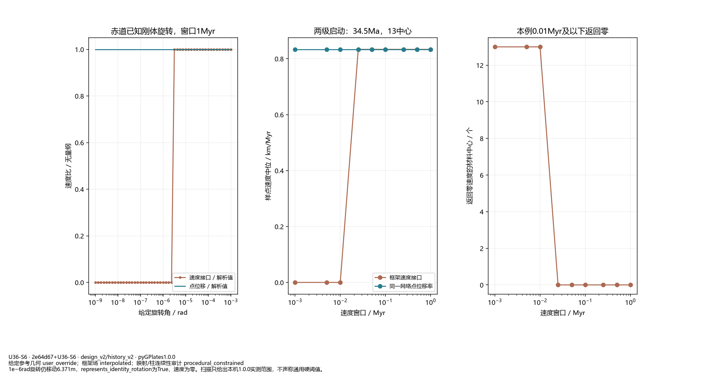
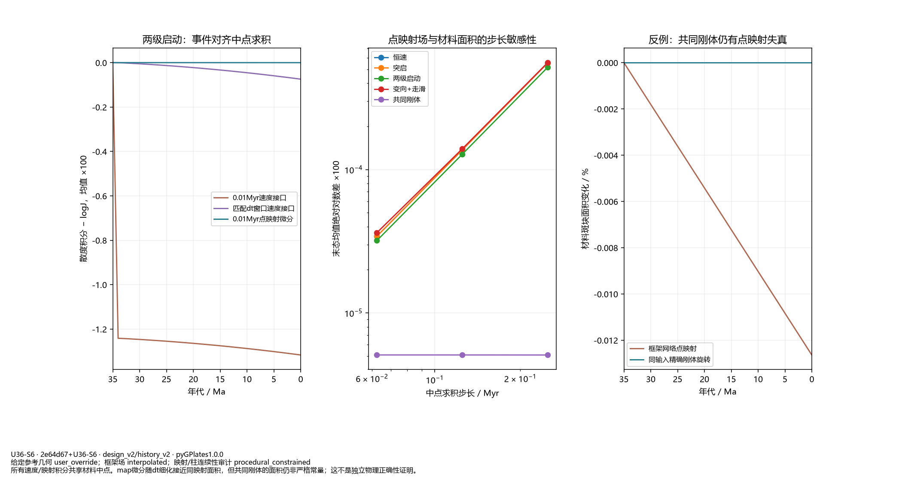
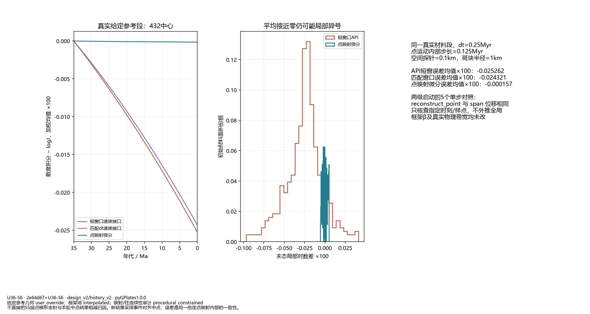
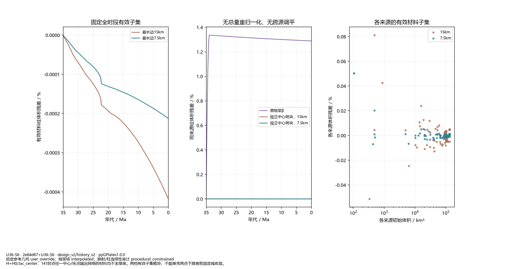
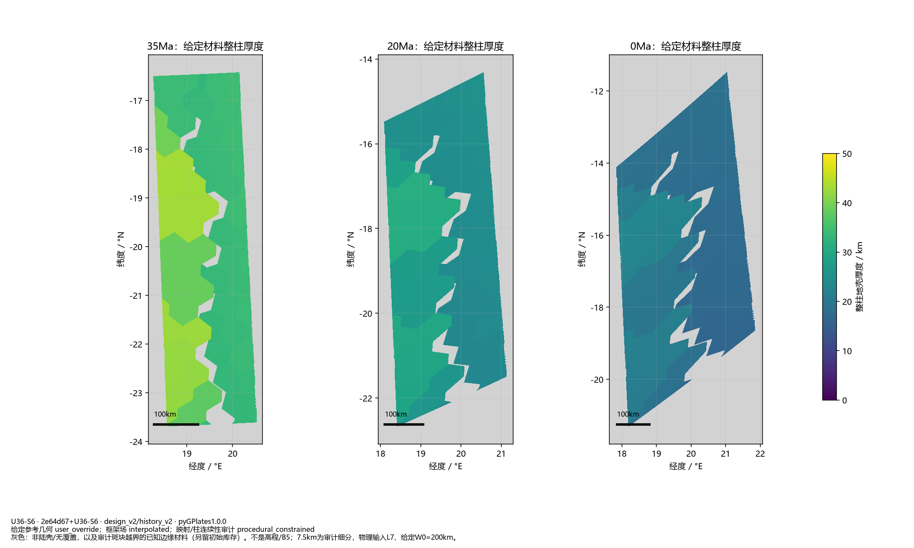

方法检查点。保留严格失败；没有新的全球演化或B5地貌。

1e−6rad旋转仍移动6.371m，represents_identity_rotation为True、速度为零。扫描只给出本机1.0.0实测范围，不声称通用硬阈值。

所有速度/映射积分共享材料中点。map微分随dt细化接近同映射面积，但共同刚体的面积仍非严格常量；这不是独立物理正确性证明。

不直接把S5端点梯形求积与本轮中点结果相减归因。新结果采用事件对齐中点；误差是同一给定点映射内部的一致性。

H=H0/Jac_center；141时点任一中心/环点越出网络的材料均不求厚度。两档有效子集略异，不能单凭两点下降宣称固定域收敛。

灰色：非陆壳/无覆盖，以及审计斑块越界的已知边缘材料（另留初始库存）。不是高程/B5；7.5km为审计细分，物理输入L7、给定W0=200km。